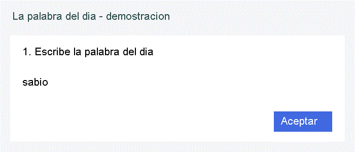

Ejercicio 11 · Adivina la palabra del día
Combina ventanas del navegador y un if...else.
Antes de empezar
prompt() pide un texto y devuelve lo que escribe el usuario. Si pulsa Cancelar, devuelve null.
alert() muestra un mensaje y espera a que el usuario lo cierre.
let nombre = prompt("¿Cómo te llamas?");
alert("Hola, " + nombre);El orden importa. Primero pide la palabra; después usa un if...else con != para mostrar un único mensaje.
Tu turno
Como en el ejercicio 8, la palabra correcta de esta simulación es sabio. Ahora el usuario escribe su intento en una ventana.
- Abre este HTML con Live Server. El código inicial contiene cuatro instrucciones activas y muestra los dos mensajes: todavía no comprueba el intento.
- Conserva las dos variables. La segunda utiliza
prompt()para pedir la palabra. - Compara
palabraUsuario != palabraCorrectacon unif...else. Coloca cadaalert()en el bloque adecuado. - Prueba una palabra incorrecta y
sabio. Escribe las palabras en minúsculas y sin espacios.
Modifica el JavaScript al final del archivo. Si cancelas el prompt(), el intento se considera incorrecto porque null es distinto de "sabio".
Resultado esperado (pulsa para verlo)
Con sabio: «¡Correcto! Has acertado la palabra del día.»
Con canto: «No es la palabra del día. ¡Inténtalo de nuevo!»
🎬 Animación ilustrativa del comportamiento esperado (el aspecto de las ventanas depende del navegador):
